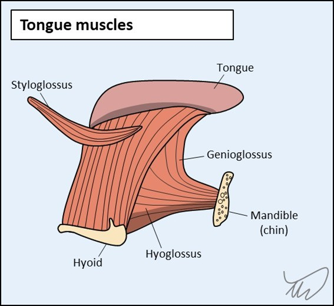
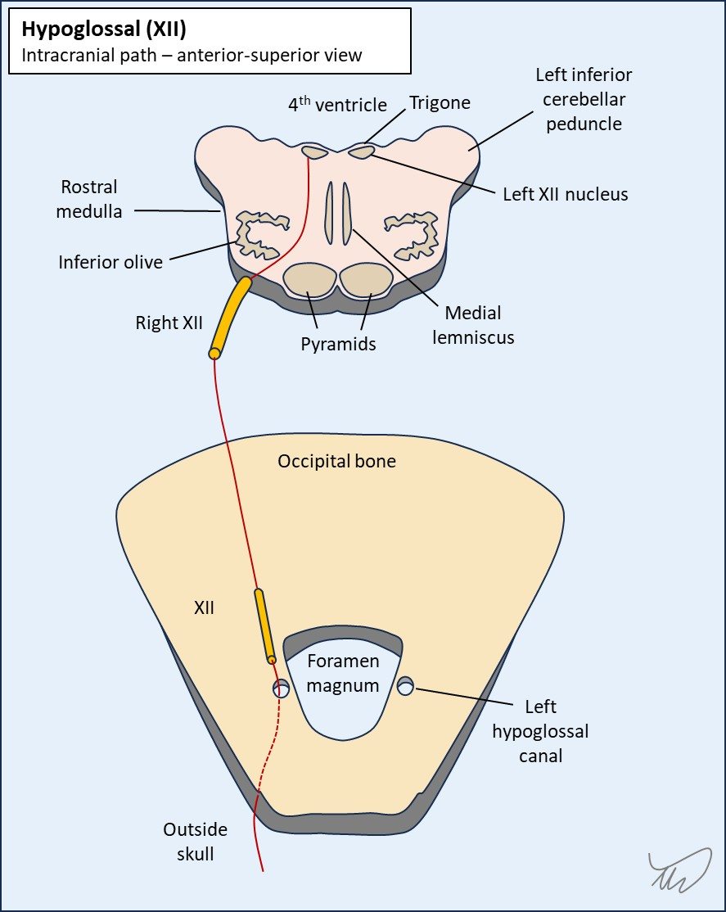
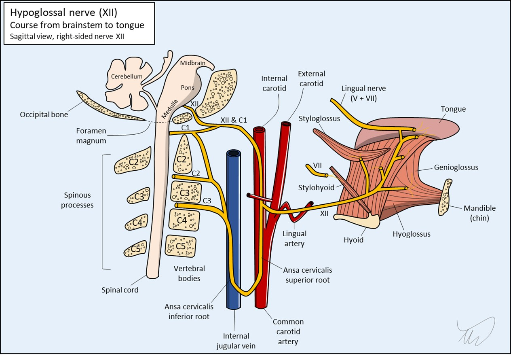
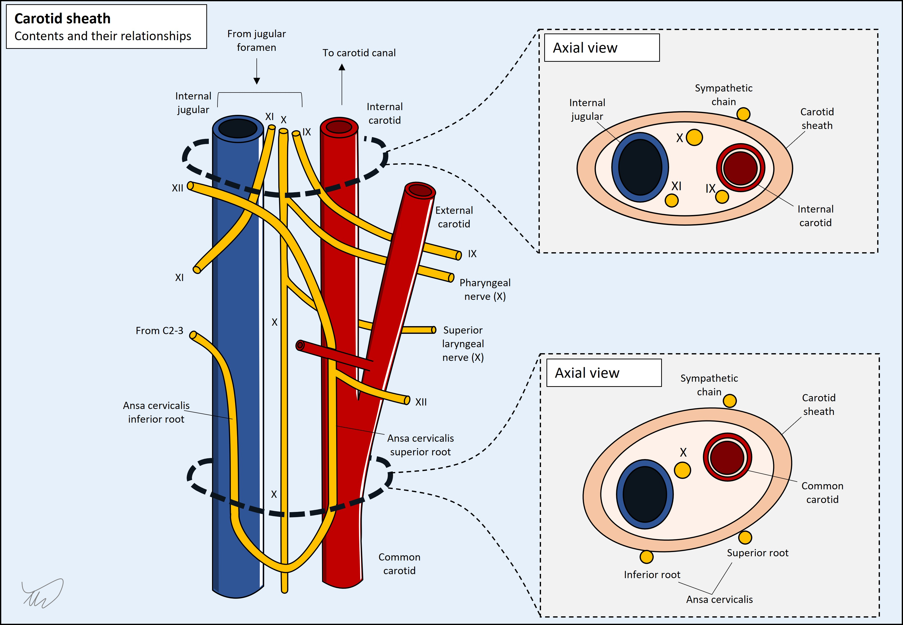
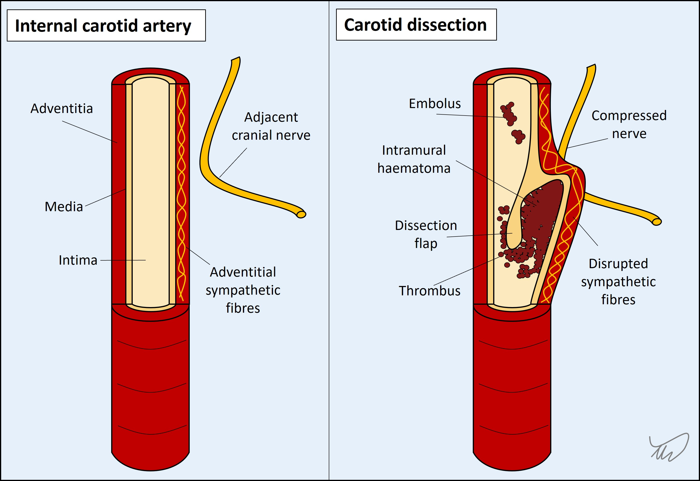

Case 17 - Slurred speech
Where is the lesion?
There are two issues here – speech disturbance and tongue deviation to one side, with inability to push it to the other. They are due to the same problem but we can look at each in turn.
1. DysarthriaThe patient has altered speech articulation – dysarthria, a problem with the mechanical aspects of speech (as opposed to phonation, or language usage).
Multiple elements are involved in allowing us to articulate speech properly, including overall motor control, and coordinated movements of the tongue, lips, jaw and palate. Humans can produce an extraordinary repertoire of sounds through these, allowing highly complicated ideas to be communicated (and in many different languages).
Problems with any part of this system leads to dysarthria, so it follows that there are different patterns of dysarthria. Simply saying ‘slurred speech’ is vague – it helps to further characterise what is heard, and a trained ear can recognise the type of dysarthria and hence localise the underlying problem. Types of dysarthria and some example causes are shown in the table below.
| Type of dysarthria | Features | Examples |
|---|---|---|
| Upper motor neuron ('pseudobulbar' or spastic) | Stiff tongue, slow speech, often monotonous. May also have labile affect | Bilateral UMN damage (e.g. motor neuron disease) |
| Bulbar | Combination of weak tongue (imprecise consonants) and palate (air escape through note) | Myasthaenia gravis |
| Cerebellar | Staccato, scanning pattern - broken into syllables, with irregular emphasis on these | Alcohol intoxication |
| Lip weakness | Problems with bilabial consonants (e.g. B, P, M - 'Baby hippopotamus') | Facial palsy (e.g. Bell's) |
| Tongue weakness | Consonants such as S, Z, T, D, L are difficult to pronounce ('Lazy Saturday')' | Hypoglossal palsy |
In some situations there are multiple types involved, particularly co-existing spastic and cerebellar dysarthria - a pattern best-seen in multiple sclerosis.
Here the issue is with particular consonants, and they all involve tongue movements - e.g. against the alveolar ridge (the plosives T and D, and the sibilants S and Z). The issue is with the tongue.
2. Tongue weaknessThere is deviation of the tongue to the left at rest and on protrusion, with inability to move it rightward. This case and the lesion's side will make sense if we review the key anatomy.
The tongue has multiple muscles, grouped into two groups:
All of these are innervated by the hypoglossal nerve (XII) – bar a single one which is vagus (X) innervated (palatoglossus). By far the most clinically apparent - and the one we specifically test - is the genioglossus. We won't bother discussing the other muscles; they're very important for communication and food intake, but they don't add much to our neurological assessment.

The genioglossus muscles on both sides account for the tongue’s bulk. They connect from the internal surface of the anterior mandible (geneion is ancient Greek for chin) to the tongue and the hyoid bone. They work simultaneously to protrude the tongue directly ahead, but can also act independently. If one alone acts, the tongue is pushed away from it to the opposite side – the left genioglossus pushes the tongue right. The tongue’s resting position is normally neutral, in the middle of the mouth, due to both exerting similar force - as with the vestibular system and the position of the eyes, the default state is tonic balance and a central position.
If one genioglossus becomes weak, the resting position of the tongue will tonically shift to the weak side due to unopposed action of the intact muscle pushing it across. If the patient protrudes their tongue it will deviate to the weak side. They can still move it further to the weak side (i.e. to an extreme), as the opposite muscle is still strong, but they can’t move it towards the strong side (past the midline) due to the paralysed genioglossus’ inability to push it across the midline.
Over time, the denervated genioglossus atrophies on the paralysed side, leading to a withered-looking hemitongue and fasciculations – but acutely this is not evident, as in this case - where the history is only 2 weeks of symptoms.
This patient's tongue deviates left and he can't move it right. He has a left hypoglossal palsy. There is a problem with nerve XII somewhere on its path from brainstem to tongue. We can try to localise this further.
Hypoglossal nerve anatomyThere is bilateral upper motor neuron (UMN) input to the hypoglossal nuclei, which are in the upper medulla on the dorsal aspect, with the fourth ventricle just behind them. The nuclei make a lump (called the hypoglossal trigone) on each side of the fourth ventricular floor (note - this term is best understood imaging a human on all fours, as with dorsal/ventral). The dorsal motor nucleus of the vagus (X) is a little lateral to the hypoglossal nuclei on each side, and both form a similar trigone next to the hypoglossal one.
The fascicles of XII run anteriorly and laterally on an angle, between the inferior olive and the pyramids, and the nerve exits the brainstem between these. It travels anteriorly to the medulla in the premedullary cistern (subarachnoid space), then pierces the dura and exits the cranial cavity via the hypoglossal canal in the skull base (occipital bone), just lateral to the foramen magnum.

From there it descends, and anastomoses with part of C1 (the lower part joins the ansa cervicalis with C2 and C3 – a loop). Together they enter the carotid space, which is enclosed by a sheath, and are adjacent to the internal carotid artery (ICA).

This space also contains the internal jugular (IJV), and nerves IX-XI – though at different vertical levels the contents and their arrangements vary, as these nerves (or branches of them in the case of X) leave at different points (figure 4). The sympathetic chain runs just outside the sheath, and the space also contains lymph nodes. This is clinically relevant as lesions here can affect multiple nerves (see later).

XII descends under the occipital artery then leaves the sheath, and travels to the floor of the oral cavity, passing under the mandible. It approaches the tongue from underneath (hence the name – hypo-glossal) and innervates the external and internal tongue muscles. There is also a small anastomotic connection with the lingual nerve, which carries general tongue sensation (V) and taste (VII) back to the brainstem. A number of cranial nerves anastomose with each other at various points, and this is one example.
This is a very long path and there's a lot of vulnerability to lesions.
Hypoglossal lesions - localisationWe have three ways of trying to help us localise a nerve lesion.
Item 1 is the most useful. Item 2 doesn't help as the nerve really doesn't give off any branches until its end-destination. Item 3 can sometimes help.
We are better off walking through the path of the nerve and considering what can lesion it along the way.
The medulla has other structures near the hypoglossal nuclei and fascicles. It'd be unlikely that a medullary lesion affecting these would not affect anything else. The classic example is medial medullary syndrome (of Dejerine), also affecting the medial lemniscus and pyramid, each above their decussation - with contralateral hemibody paralysis and sensory loss. Another is syringobulbia, with a central cyst compressing bilateral lower cranial nuclei.
Lesions adjacent to the brainstem such as tumours may involve XII but if they do it's often without involving other nuerves, as XII makes a direct forward path from the anterior medulla, on its own. This is in contrast to VII, VIII, IX, X and XII which are more posterior and lateral and situated near each other - so can be affected by large cerebellopontine masses.

Disease at the base of the skull - especially cancer - can produce severe unilateral occipital pain and a XII palsy (occipital condyle syndrome). Often this is worse on head turning. The patient has a headache, though this isn’t particularly bad nor associated with movement, but that doesn’t exclude a lesion here.
Disease around the skull base can also affect nerves IX, X and XI as well as the sympathetic chain (causing Horner’s if disrupted). The involvement of any of these with a XII palsy is a major clue to a lesion in this zone. It wouldn't be clinical neuroanatomy without eponyms - and various exist for combinations of these clusters.
| Nerves involved | Syndrome |
|---|---|
| IX, X, XI | Vernet (jugular foramen) |
| IX, X, XI, XII | Collet-Sicard |
| IX, X, XI, XII and sympathetic chain | Villaret |
| X, XII | Tapia |
Pathology in the carotid sheath such as carotid dissection or jugular vein thrombosis - can cause neck pain as well as combinations of lesions in these lower cranial nerves due to swelling of the vessel squashing the adjacent nerves. If there is prominent neck pain, that is a concern for a vascular lesion in the sheath.

After the sheath the nerve takes a solitary path, only interacting with other nerves (V, VII) at the tongue itself (and not in a way that produces recognisable combined cranial nerve deficits). The only other markers to pathology in this distal section would again be pain or other features such as swelling - for example due to a mass or infection in the area below the tongue.
In summary – we can say there’s a lesion in the left XII, likely not within the brainstem, but it's difficult to localise it any more precisely after that. Given the sparing of other structures, we think it’s less likely to be in the carotid sheath, though it still could be. We can’t say much else – it could be anywhere along the nerve really.
However, the dull headache is almost certainly related, and there are elements about this patient’s background that make one aetiology and location a serious concern here.
What is the lesion?